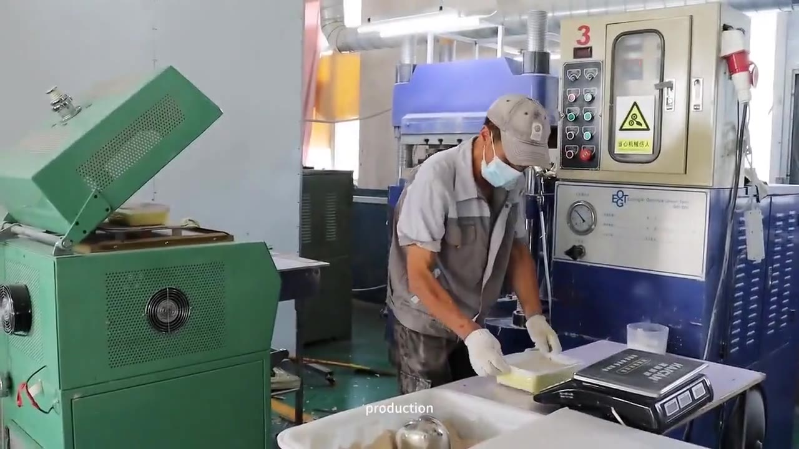

Most buyers arrive with one of three questions: can you make this in my color and my logo, can you prove what it is made of, and can you actually ship the volume on time. The three pages below answer them in that order.

Pantone color matching, molded or printed logos, custom packaging and new-shape development. MOQ by item, sample timing and what we need from you before quoting.
See the OEM process →
What documents to request, how to read a food-contact test report, and which claims we will and will not make. Written for buyers who have been handed a vague certificate before.
How we test →
5,000 m² in Shenyang, 50+ staff, 20+ molding presses. The full process from rice husk to finished carton, plus how lead times are quoted and how to book an inspection.
Inside the plant →| If you are… | Start here |
|---|---|
| An importer or distributor | Product range for the stock line, then OEM & ODM if you want your own brand on the carton. |
| A private-label brand | OEM & ODM Service — colors, logo method, packaging files and sample timing. |
| A foodservice or hospitality group | Products for shapes and sizes, then Quality & Testing for the documents your procurement team will ask for. |
| Comparing factories | Factory & Capacity — equipment, process and inspection access, stated plainly. |
Nothing on this site is a certification claim we cannot back with a document. We hold an SGS food-contact test report on our rice husk material and we say "SGS tested" — nothing more. Any other standard your market requires, we tell you honestly whether we have it and what it would take to get it.
Plates, bowls, trays, boards, cups, lunch boxes and kids' sets — all from the same rice husk composite, so a distributor can build a coherent shelf set without sourcing from five suppliers. Browse the full range.
Send the item, target quantity and destination country. You get a quotation, a lead time and the document list for that market — in one reply.